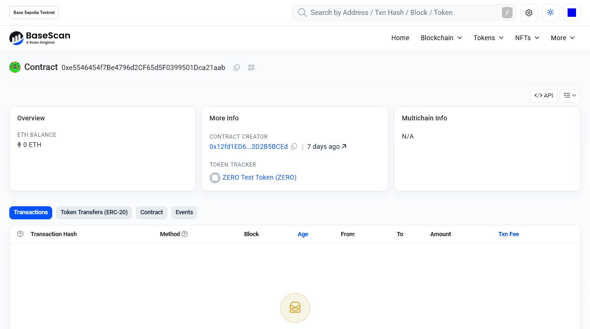
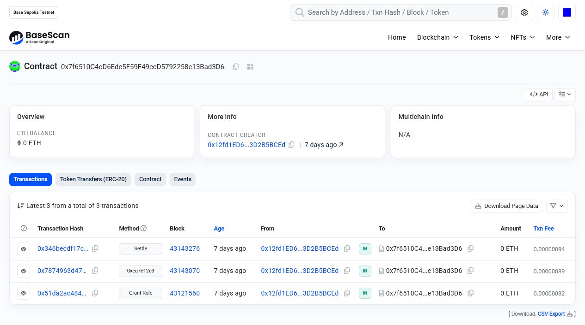
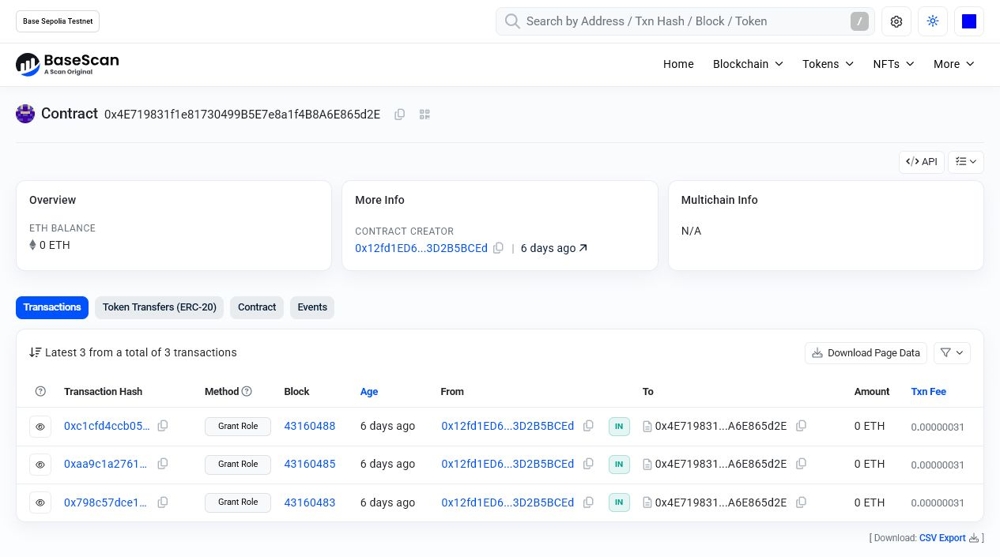
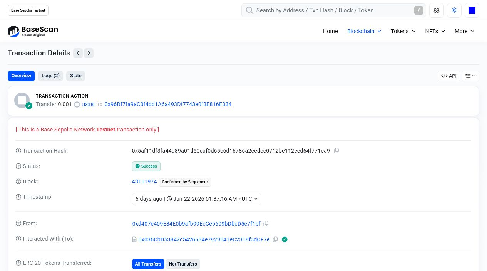
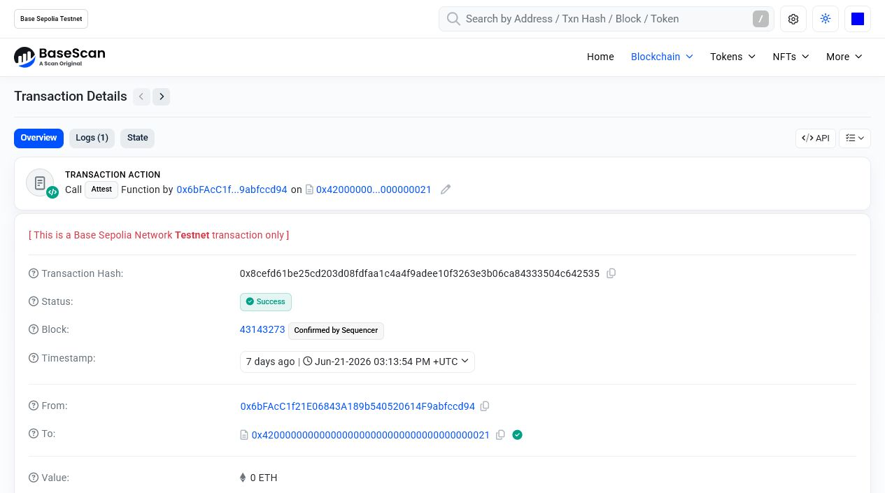
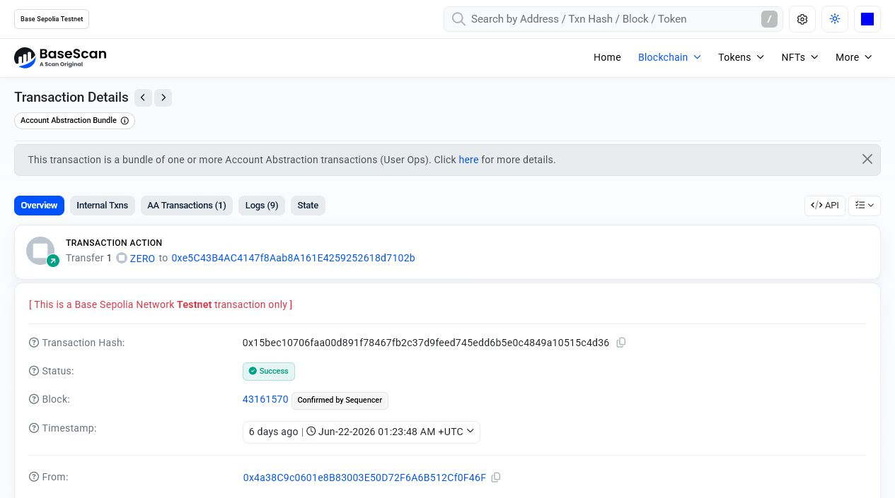
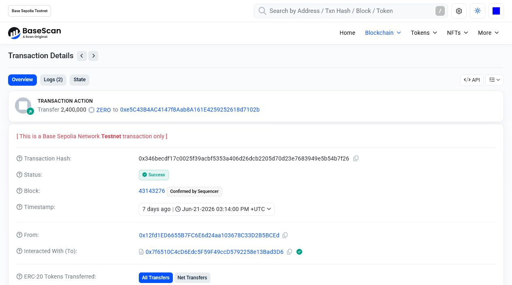
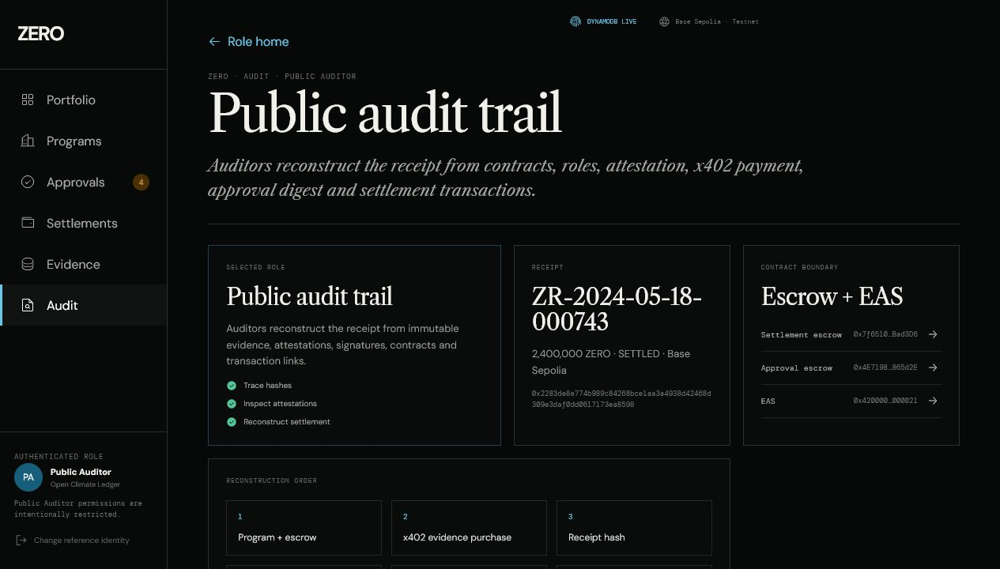

ERC-20 · ZERO TEST TOKEN
Programmable prevention value
0xe5546454f7Be4796d2CF65d5F0399501Dca21aabProject-denominated testnet value used to represent prevention settlement amounts.
The token, settlement rail and human-approval rail exist as independent onchain contracts.

0xe5546454f7Be4796d2CF65d5F0399501Dca21aabProject-denominated testnet value used to represent prevention settlement amounts.

0x7f6510C4cD6Edc5F59F49ccD5792258e13Bad3D6Releases value only against the expected receipt and settlement conditions.

0x4E719831f1e81730499B5E7e8a1f4B8A6E865d2ESeparates agent proposals from the authority required to move capital.
Payment, attestation, authorization and settlement are confirmed—not simulated—in the testnet ledger.




The live auditor surface connects operational storage, agent infrastructure and public onchain proof.

Live product surface · DYNAMODB LIVE · Base Sepolia Testnet